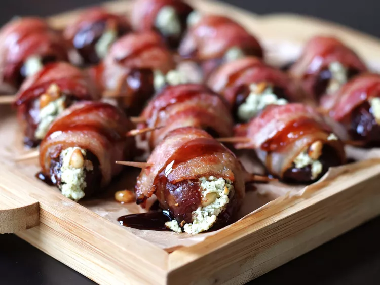

Goat's Cheese Stuffed Dates

Description
These irresistible goat cheese stuffed dates combine the sweet chewiness of Medjool dates with the creamy tang of garlic and herb goat cheese, all wrapped in smoky bacon and crisped to perfection.
Ingredients
- 14 Medjool dates
- 4 oz garlic and herb goat's cheese
- 1 tbspn pine nuts
- 7 slices of bacon, cut in half
- 14 toothpicks
- 0.25 cup balsamic glaze
Steps
- Preheat the oven to 200 degrees and line a baking sheet with baking paper
- Using a paring knife, cut each date lengthwise through to the middle and remove pit. Stuff each date with goat cheese, then press 4 to 5 pine nuts into the cheese. Wrap each date with a piece of bacon and secure with a toothpick. Bacon should wrap around each date about 1 1/2 times. Place on the prepared baking sheet.
- Bake in the preheated oven until bacon is nearly done, 15 to 17 minutes.
- Turn on the broiler and place a rack 6 inches from heat. Broil dates until bacon is browned and slightly crispy, 1 to 2 minutes. Remove from oven and place on a serving platter; drizzle dates with balsamic glaze.